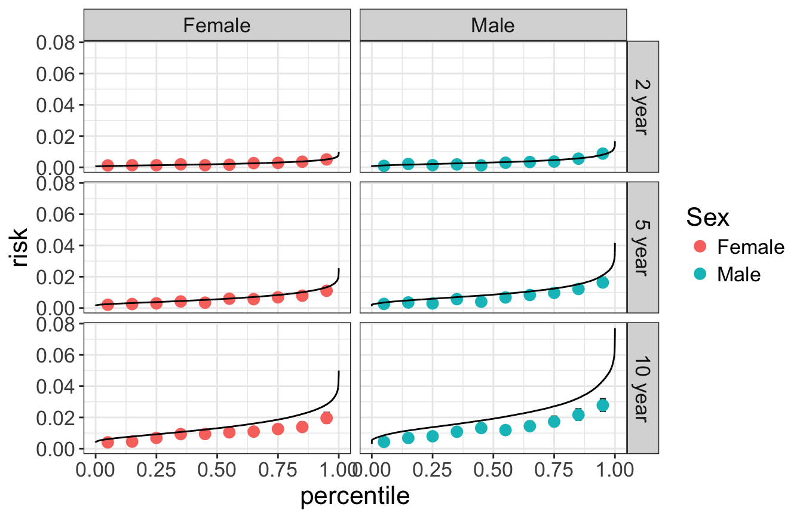
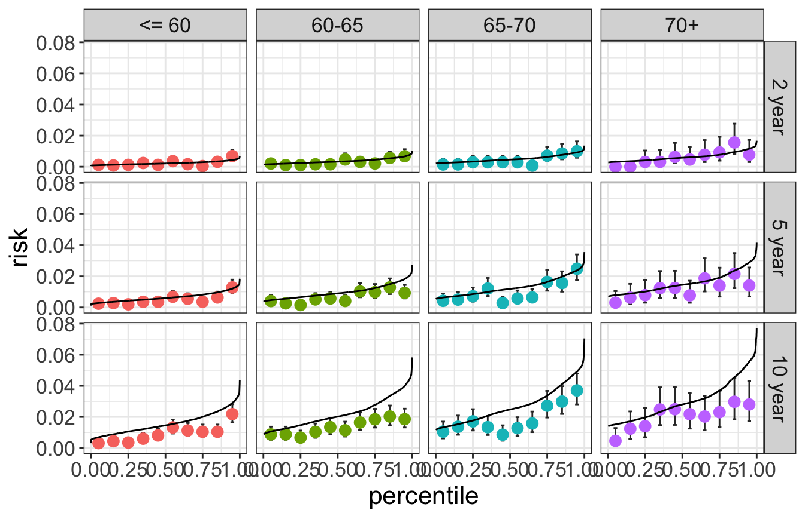
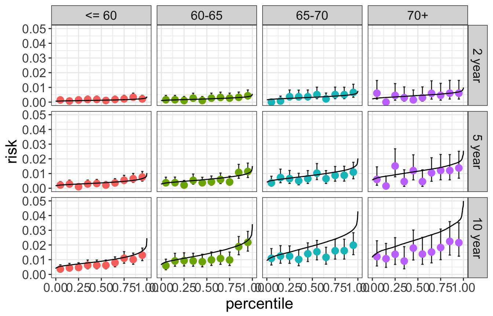

The E-score risk model calculates the cumulative risk of experiencing a CRC dx by a fixed landmark prediction time \(t\):
\[ r_t(X) = P(T < t | X) \] Where \(T\) is survival time and covariate information \(X\) includes the E-score, family history, and endoscopy history. See here for more information about the construction of the E-score risk model.
We check the calibration of a risk model in order to assess if the risk estimates output from \(r_t(X)\) are meaningful. Specifically, we assess ‘weak’ calibration that asks the question:
Among people with \(r_t(X) = r\), is the cumulative \(t-year\) event rate observed to be approximately r?
We create calibration plots for the E-score absolute-risk estimates at years t = 2, 5, 10 as follows:
Observed cumulative incidence rates are shown by points. The solid black curve shows the predicted t-year absolute risk.

Below, we show calibration plots stratified on categorized age and gender.
Sample size by age/gender is shown in the table below:
| Female | Male | |
|---|---|---|
| <= 60 | 31517 | 28541 |
| 60-65 | 21185 | 21905 |
| 65-70 | 15745 | 15899 |
| 70+ | 7597 | 7342 |

